Frozen observer neuroscience atlasDoes the observer use target rather than foil evidence?
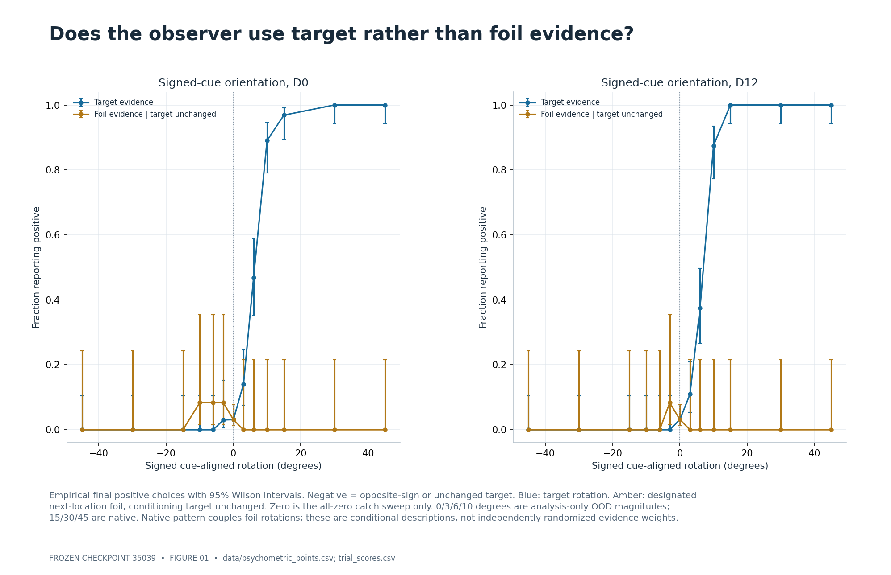
Empirical final positive choices with 95% Wilson intervals. Negative = opposite-sign or unchanged target. Blue: target rotation. Amber: designated next-location foil, conditioning target unchanged. Zero is the all-zero catch sweep only. 0/3/6/10 degrees are analysis-only OOD magnitudes; 15/30/45 are native. Native pattern couples foil rotations; these are conditional descriptions, not independently randomized evidence weights.
PNG · SVG · PDF · Source: data/psychometric_points.csv; trial_scores.csv
Matched sensory scenes; cue identity changes the requested report
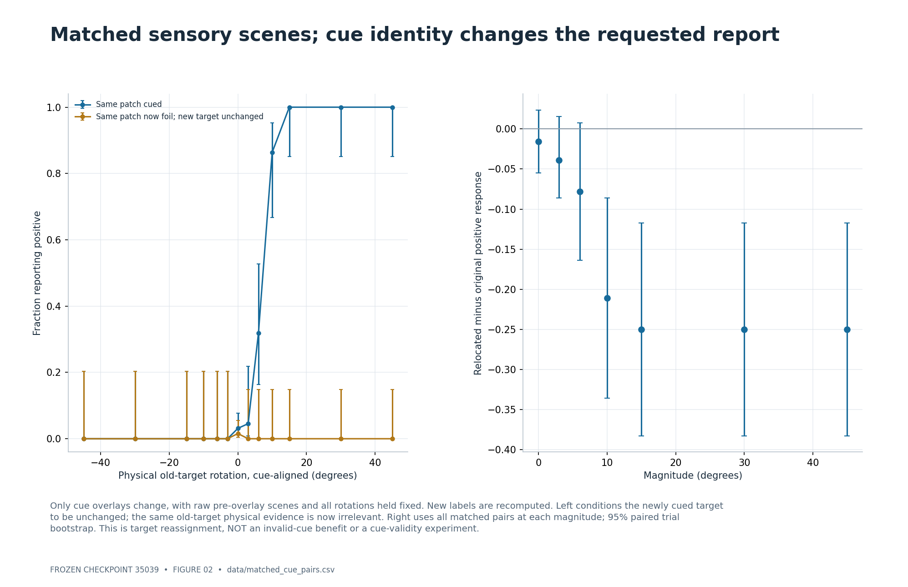
Only cue overlays change, with raw pre-overlay scenes and all rotations held fixed. New labels are recomputed. Left conditions the newly cued target to be unchanged; the same old-target physical evidence is now irrelevant. Right uses all matched pairs at each magnitude; 95% paired trial bootstrap. This is target reassignment, NOT an invalid-cue benefit or a cue-validity experiment.
PNG · SVG · PDF · Source: data/matched_cue_pairs.csv
Native sensory competence at checkpoint 35039
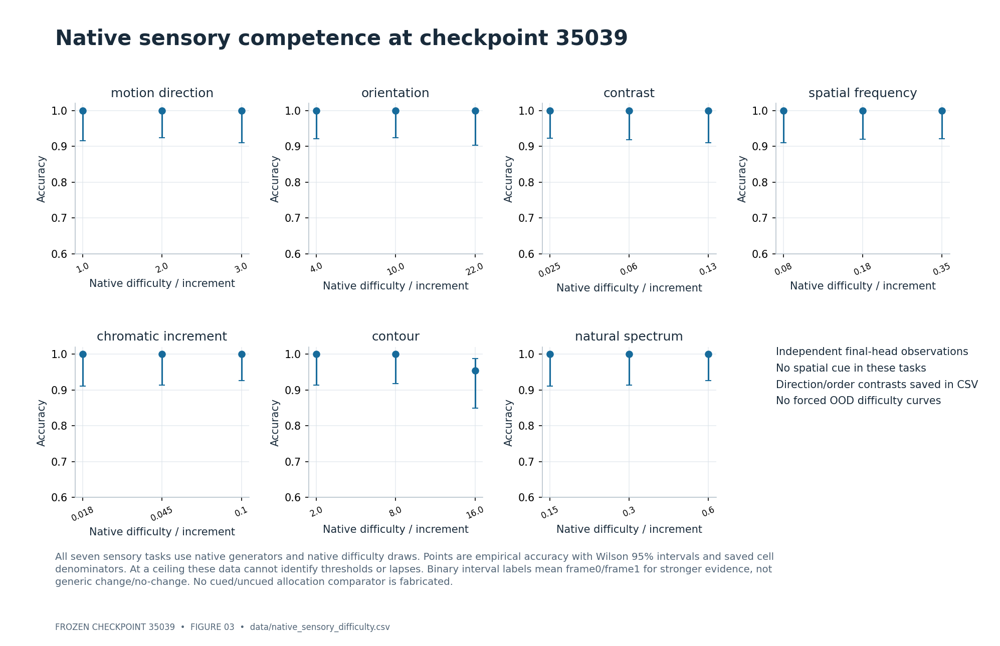
All seven sensory tasks use native generators and native difficulty draws. Points are empirical accuracy with Wilson 95% intervals and saved cell denominators. At a ceiling these data cannot identify thresholds or lapses. Binary interval labels mean frame0/frame1 for stronger evidence, not generic change/no-change. No cued/uncued allocation comparator is fabricated.
PNG · SVG · PDF · Source: data/native_sensory_difficulty.csv
Retention and ring-cue response
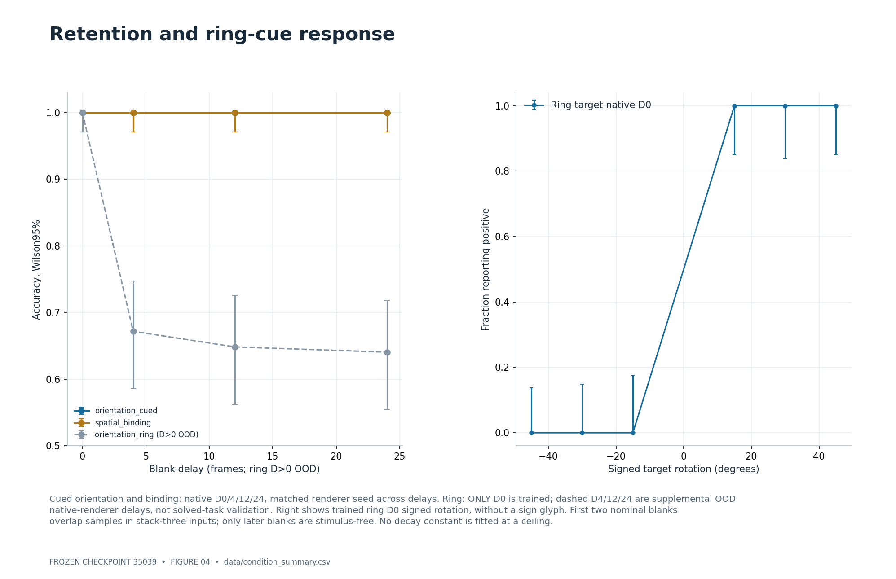
Cued orientation and binding: native D0/4/12/24, matched renderer seed across delays. Ring: ONLY D0 is trained; dashed D4/12/24 are supplemental OOD native-renderer delays, not solved-task validation. Right shows trained ring D0 signed rotation, without a sign glyph. First two nominal blanks overlap samples in stack-three inputs; only later blanks are stimulus-free. No decay constant is fitted at a ceiling.
PNG · SVG · PDF · Source: data/condition_summary.csv
Target swaps and below-native orientation difficulty
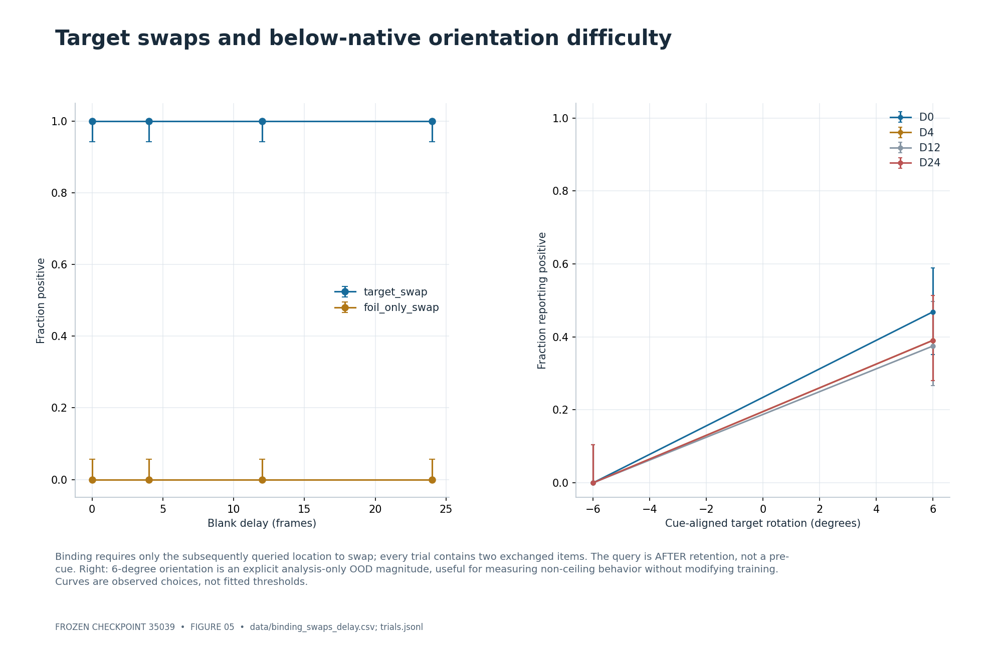
Binding requires only the subsequently queried location to swap; every trial contains two exchanged items. The query is AFTER retention, not a pre-cue. Right: 6-degree orientation is an explicit analysis-only OOD magnitude, useful for measuring non-ceiling behavior without modifying training. Curves are observed choices, not fitted thresholds.
PNG · SVG · PDF · Source: data/binding_swaps_delay.csv; trials.jsonl
orientation cued — real trial, scale 0
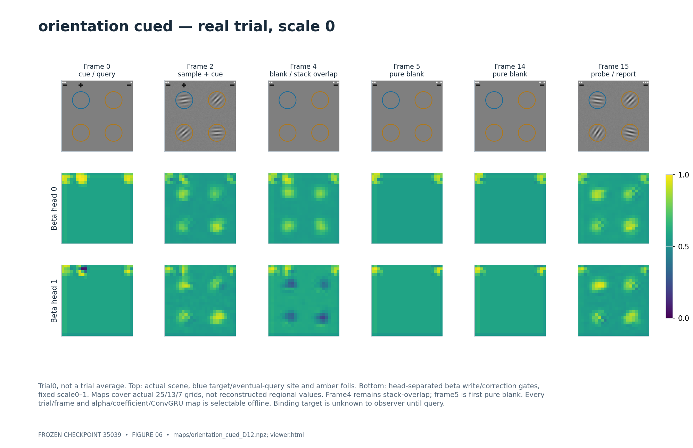
Trial0, not a trial average. Top: actual scene, blue target/eventual-query site and amber foils. Bottom: head-separated beta write/correction gates, fixed scale0–1. Maps cover actual 25/13/7 grids, not reconstructed regional values. Frame4 remains stack-overlap; frame5 is first pure blank. Every trial/frame and alpha/coefficient/ConvGRU map is selectable offline. Binding target is unknown to observer until query.
PNG · SVG · PDF · Source: maps/orientation_cued_D12.npz; viewer.html
orientation cued — real trial, scale 1
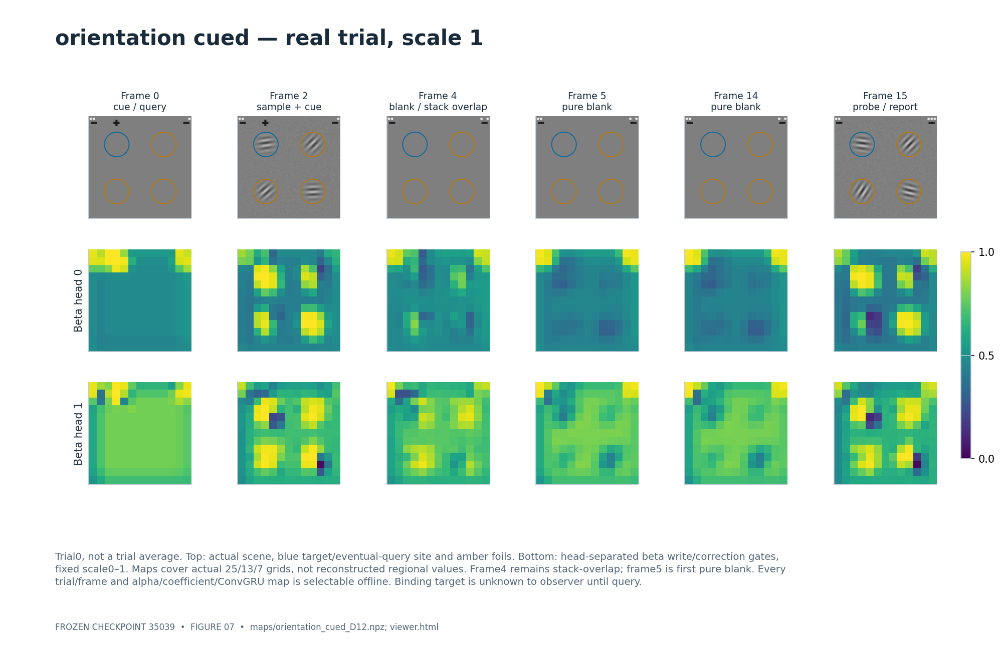
Trial0, not a trial average. Top: actual scene, blue target/eventual-query site and amber foils. Bottom: head-separated beta write/correction gates, fixed scale0–1. Maps cover actual 25/13/7 grids, not reconstructed regional values. Frame4 remains stack-overlap; frame5 is first pure blank. Every trial/frame and alpha/coefficient/ConvGRU map is selectable offline. Binding target is unknown to observer until query.
PNG · SVG · PDF · Source: maps/orientation_cued_D12.npz; viewer.html
orientation cued — real trial, scale 2
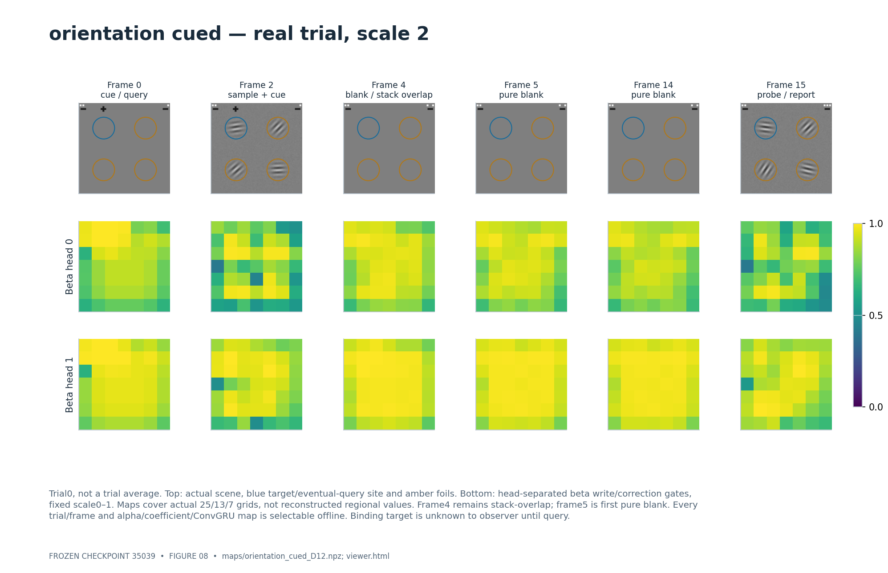
Trial0, not a trial average. Top: actual scene, blue target/eventual-query site and amber foils. Bottom: head-separated beta write/correction gates, fixed scale0–1. Maps cover actual 25/13/7 grids, not reconstructed regional values. Frame4 remains stack-overlap; frame5 is first pure blank. Every trial/frame and alpha/coefficient/ConvGRU map is selectable offline. Binding target is unknown to observer until query.
PNG · SVG · PDF · Source: maps/orientation_cued_D12.npz; viewer.html
Retention gates and signed local temporal coefficients
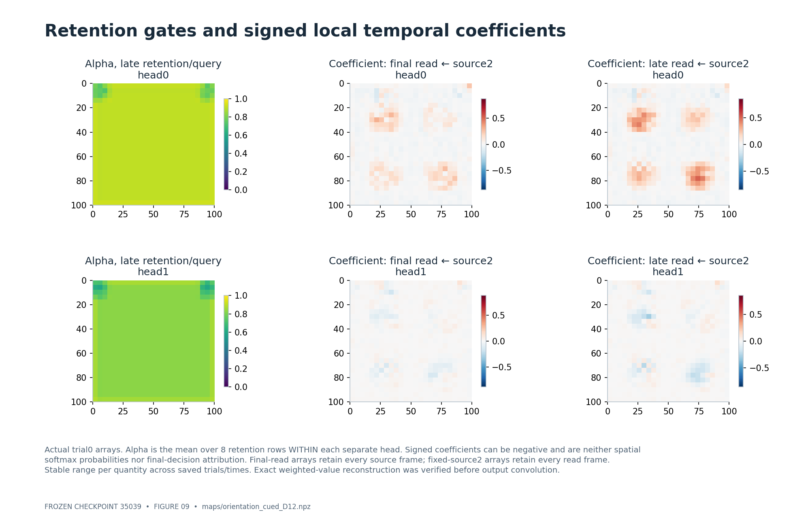
Actual trial0 arrays. Alpha is the mean over 8 retention rows WITHIN each separate head. Signed coefficients can be negative and are neither spatial softmax probabilities nor final-decision attribution. Final-read arrays retain every source frame; fixed-source2 arrays retain every read frame. Stable range per quantity across saved trials/times. Exact weighted-value reconstruction was verified before output convolution.
PNG · SVG · PDF · Source: maps/orientation_cued_D12.npz
Downstream 7×7 recurrent readout — distinct measurements
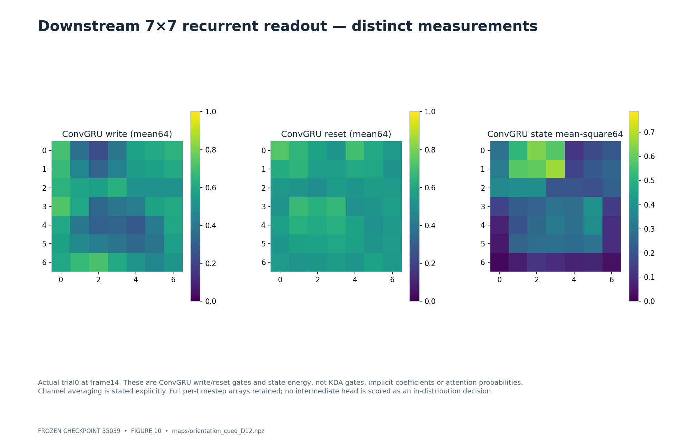
Actual trial0 at frame14. These are ConvGRU write/reset gates and state energy, not KDA gates, implicit coefficients or attention probabilities. Channel averaging is stated explicitly. Full per-timestep arrays retained; no intermediate head is scored as an in-distribution decision.
PNG · SVG · PDF · Source: maps/orientation_cued_D12.npz
orientation cued — beta allocation
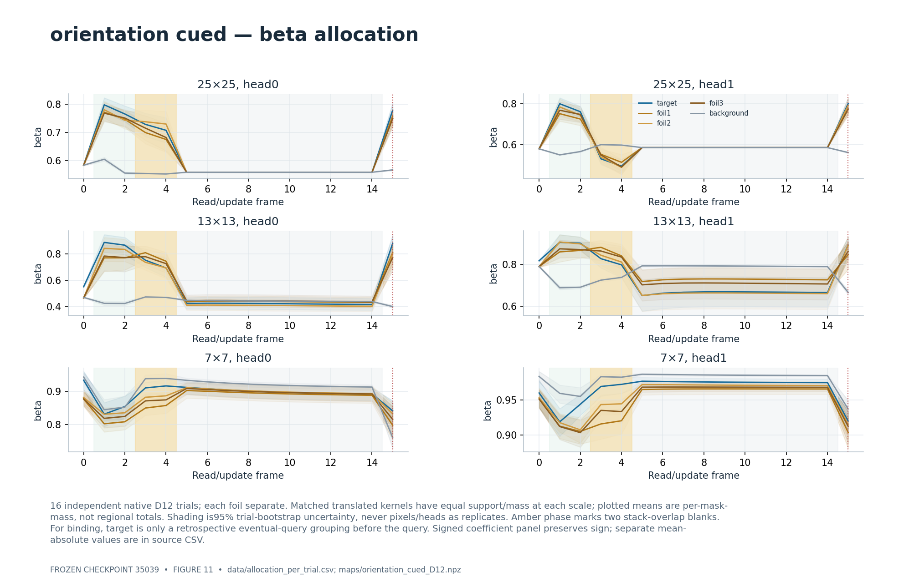
16 independent native D12 trials; each foil separate. Matched translated kernels have equal support/mass at each scale; plotted means are per-mask-mass, not regional totals. Shading is95% trial-bootstrap uncertainty, never pixels/heads as replicates. Amber phase marks two stack-overlap blanks. For binding, target is only a retrospective eventual-query grouping before the query. Signed coefficient panel preserves sign; separate mean-absolute values are in source CSV.
PNG · SVG · PDF · Source: data/allocation_per_trial.csv; maps/orientation_cued_D12.npz
orientation cued — alpha mean8 allocation
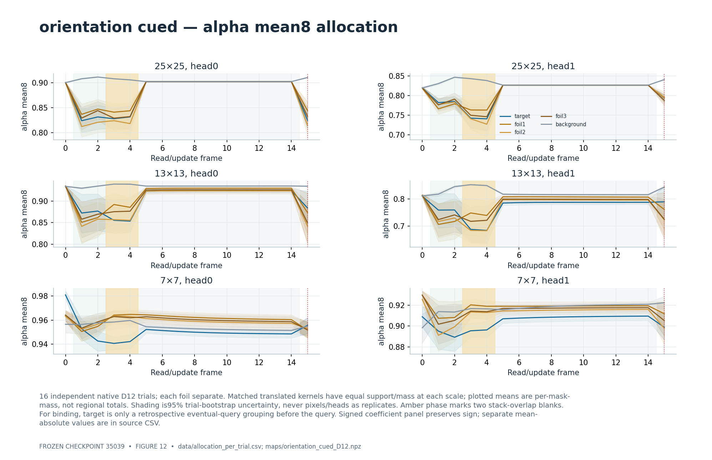
16 independent native D12 trials; each foil separate. Matched translated kernels have equal support/mass at each scale; plotted means are per-mask-mass, not regional totals. Shading is95% trial-bootstrap uncertainty, never pixels/heads as replicates. Amber phase marks two stack-overlap blanks. For binding, target is only a retrospective eventual-query grouping before the query. Signed coefficient panel preserves sign; separate mean-absolute values are in source CSV.
PNG · SVG · PDF · Source: data/allocation_per_trial.csv; maps/orientation_cued_D12.npz
orientation cued — coeff final read allocation
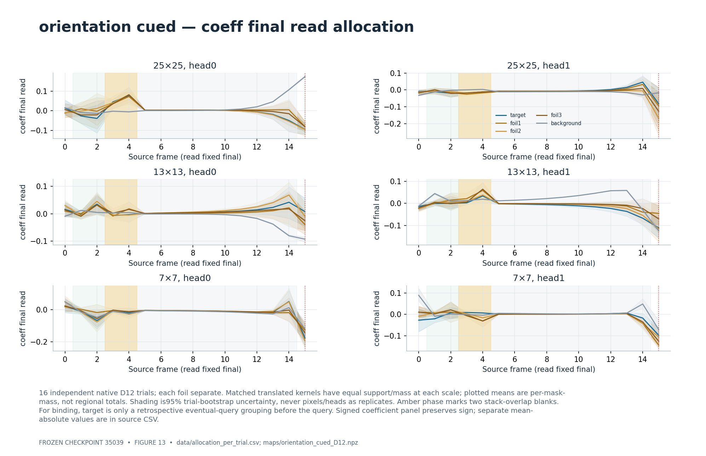
16 independent native D12 trials; each foil separate. Matched translated kernels have equal support/mass at each scale; plotted means are per-mask-mass, not regional totals. Shading is95% trial-bootstrap uncertainty, never pixels/heads as replicates. Amber phase marks two stack-overlap blanks. For binding, target is only a retrospective eventual-query grouping before the query. Signed coefficient panel preserves sign; separate mean-absolute values are in source CSV.
PNG · SVG · PDF · Source: data/allocation_per_trial.csv; maps/orientation_cued_D12.npz
orientation cued — coeff source2 all reads allocation
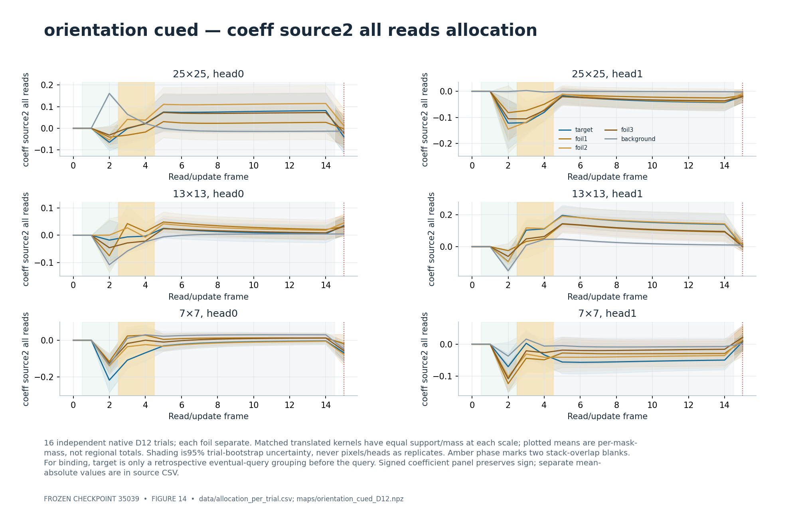
16 independent native D12 trials; each foil separate. Matched translated kernels have equal support/mass at each scale; plotted means are per-mask-mass, not regional totals. Shading is95% trial-bootstrap uncertainty, never pixels/heads as replicates. Amber phase marks two stack-overlap blanks. For binding, target is only a retrospective eventual-query grouping before the query. Signed coefficient panel preserves sign; separate mean-absolute values are in source CSV.
PNG · SVG · PDF · Source: data/allocation_per_trial.csv; maps/orientation_cued_D12.npz
Absolute coefficient magnitude is not signed allocation
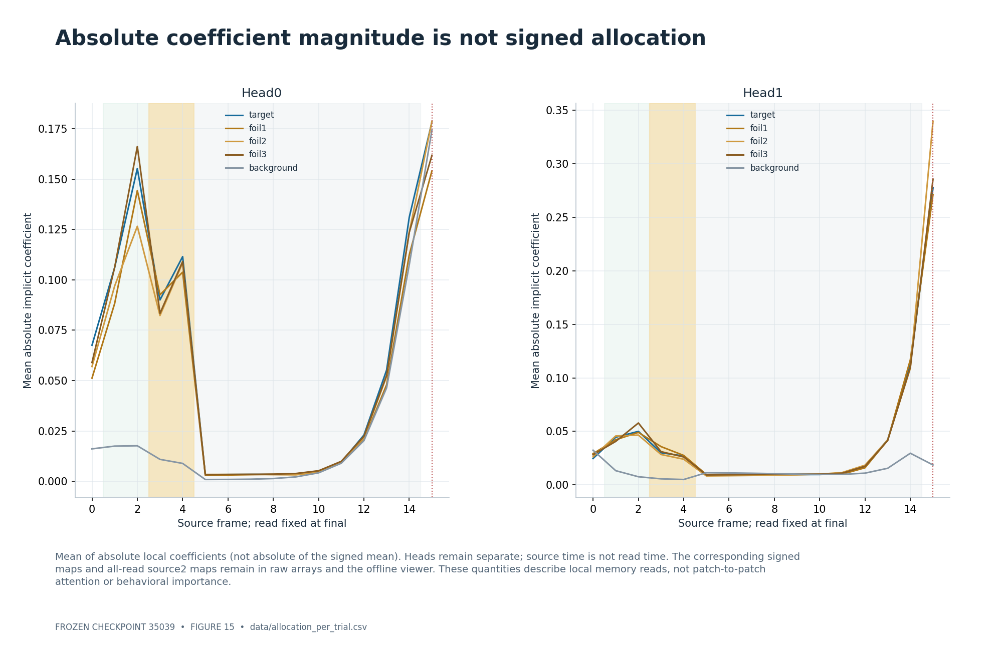
Mean of absolute local coefficients (not absolute of the signed mean). Heads remain separate; source time is not read time. The corresponding signed maps and all-read source2 maps remain in raw arrays and the offline viewer. These quantities describe local memory reads, not patch-to-patch attention or behavioral importance.
PNG · SVG · PDF · Source: data/allocation_per_trial.csv
spatial binding — real trial, scale 0
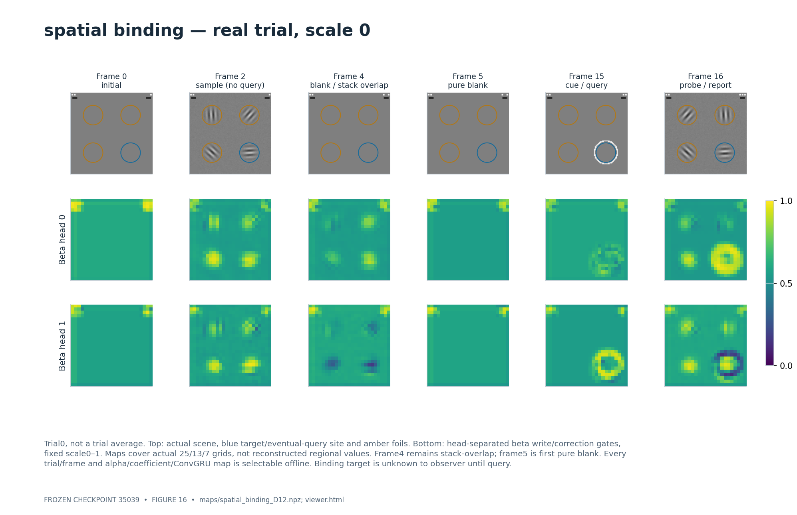
Trial0, not a trial average. Top: actual scene, blue target/eventual-query site and amber foils. Bottom: head-separated beta write/correction gates, fixed scale0–1. Maps cover actual 25/13/7 grids, not reconstructed regional values. Frame4 remains stack-overlap; frame5 is first pure blank. Every trial/frame and alpha/coefficient/ConvGRU map is selectable offline. Binding target is unknown to observer until query.
PNG · SVG · PDF · Source: maps/spatial_binding_D12.npz; viewer.html
spatial binding — real trial, scale 1
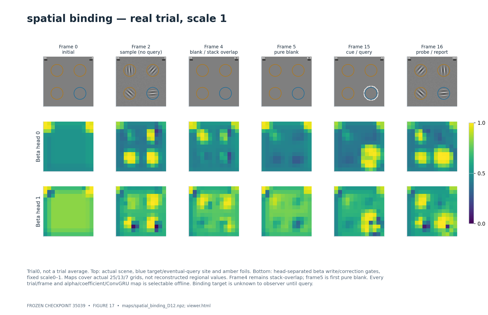
Trial0, not a trial average. Top: actual scene, blue target/eventual-query site and amber foils. Bottom: head-separated beta write/correction gates, fixed scale0–1. Maps cover actual 25/13/7 grids, not reconstructed regional values. Frame4 remains stack-overlap; frame5 is first pure blank. Every trial/frame and alpha/coefficient/ConvGRU map is selectable offline. Binding target is unknown to observer until query.
PNG · SVG · PDF · Source: maps/spatial_binding_D12.npz; viewer.html
spatial binding — real trial, scale 2
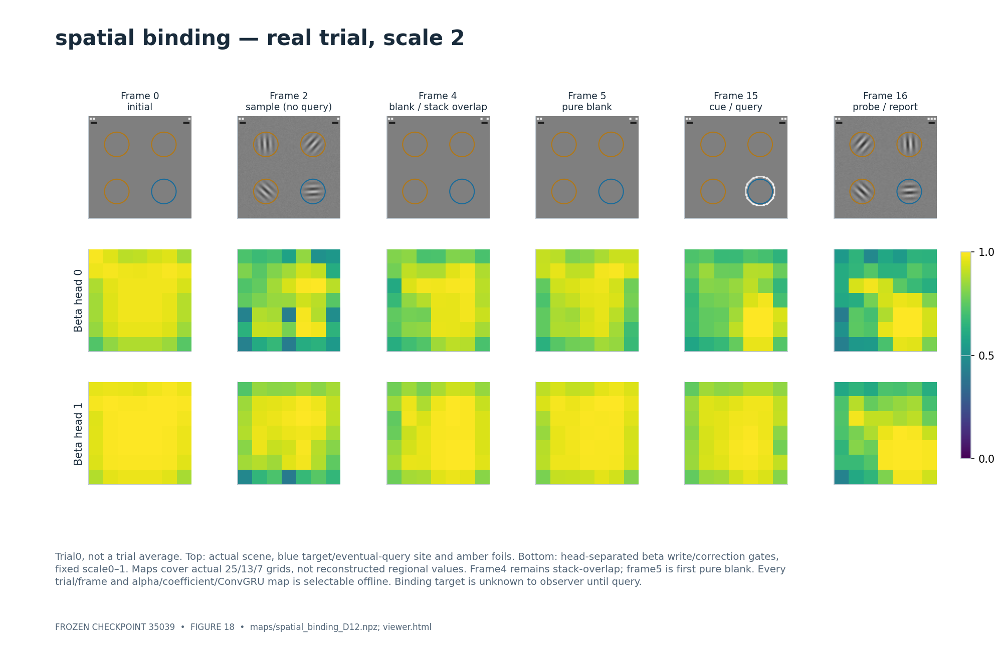
Trial0, not a trial average. Top: actual scene, blue target/eventual-query site and amber foils. Bottom: head-separated beta write/correction gates, fixed scale0–1. Maps cover actual 25/13/7 grids, not reconstructed regional values. Frame4 remains stack-overlap; frame5 is first pure blank. Every trial/frame and alpha/coefficient/ConvGRU map is selectable offline. Binding target is unknown to observer until query.
PNG · SVG · PDF · Source: maps/spatial_binding_D12.npz; viewer.html
Retention gates and signed local temporal coefficients
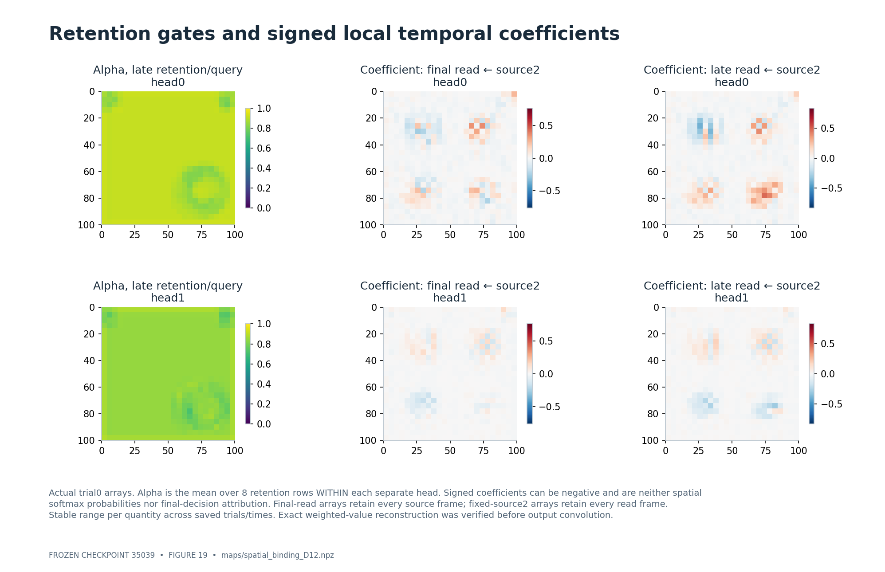
Actual trial0 arrays. Alpha is the mean over 8 retention rows WITHIN each separate head. Signed coefficients can be negative and are neither spatial softmax probabilities nor final-decision attribution. Final-read arrays retain every source frame; fixed-source2 arrays retain every read frame. Stable range per quantity across saved trials/times. Exact weighted-value reconstruction was verified before output convolution.
PNG · SVG · PDF · Source: maps/spatial_binding_D12.npz
Downstream 7×7 recurrent readout — distinct measurements
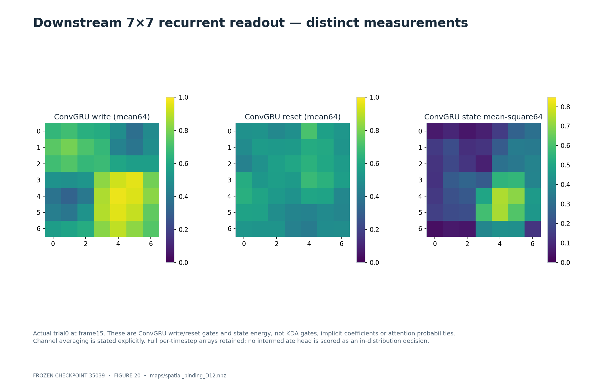
Actual trial0 at frame15. These are ConvGRU write/reset gates and state energy, not KDA gates, implicit coefficients or attention probabilities. Channel averaging is stated explicitly. Full per-timestep arrays retained; no intermediate head is scored as an in-distribution decision.
PNG · SVG · PDF · Source: maps/spatial_binding_D12.npz
spatial binding — beta allocation
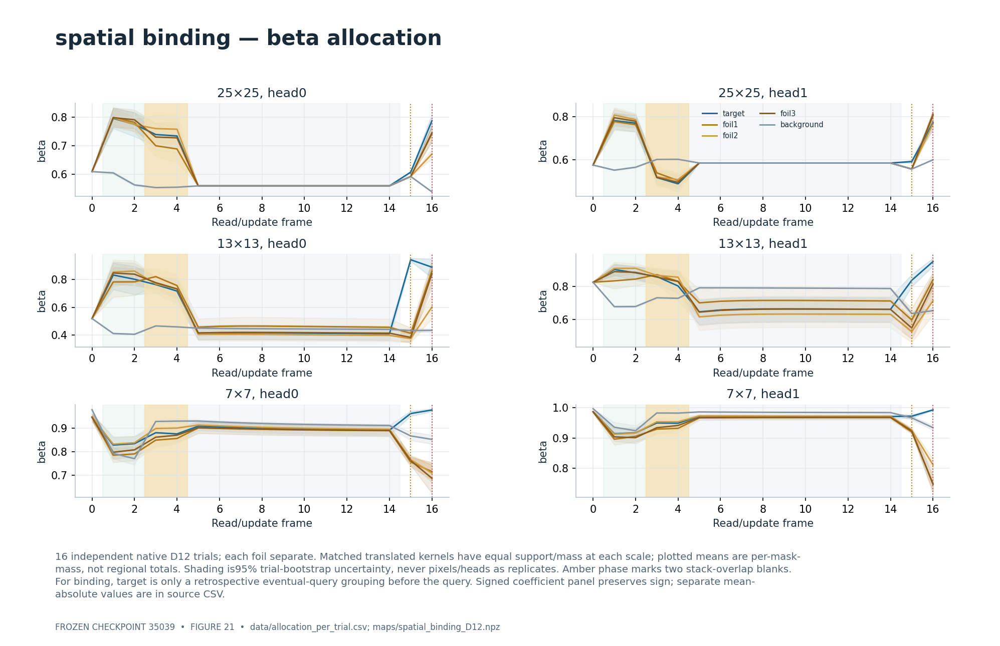
16 independent native D12 trials; each foil separate. Matched translated kernels have equal support/mass at each scale; plotted means are per-mask-mass, not regional totals. Shading is95% trial-bootstrap uncertainty, never pixels/heads as replicates. Amber phase marks two stack-overlap blanks. For binding, target is only a retrospective eventual-query grouping before the query. Signed coefficient panel preserves sign; separate mean-absolute values are in source CSV.
PNG · SVG · PDF · Source: data/allocation_per_trial.csv; maps/spatial_binding_D12.npz
spatial binding — alpha mean8 allocation
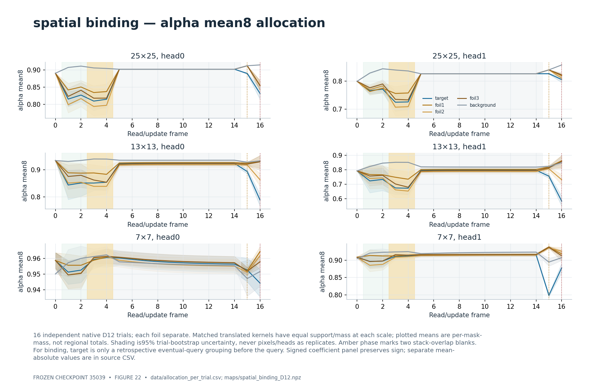
16 independent native D12 trials; each foil separate. Matched translated kernels have equal support/mass at each scale; plotted means are per-mask-mass, not regional totals. Shading is95% trial-bootstrap uncertainty, never pixels/heads as replicates. Amber phase marks two stack-overlap blanks. For binding, target is only a retrospective eventual-query grouping before the query. Signed coefficient panel preserves sign; separate mean-absolute values are in source CSV.
PNG · SVG · PDF · Source: data/allocation_per_trial.csv; maps/spatial_binding_D12.npz
spatial binding — coeff final read allocation
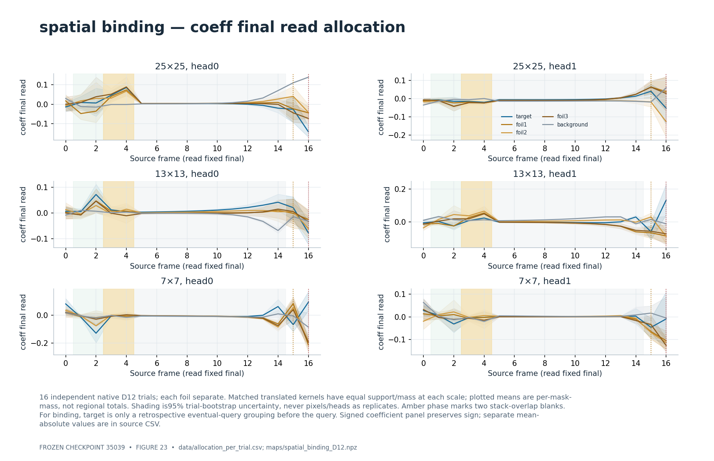
16 independent native D12 trials; each foil separate. Matched translated kernels have equal support/mass at each scale; plotted means are per-mask-mass, not regional totals. Shading is95% trial-bootstrap uncertainty, never pixels/heads as replicates. Amber phase marks two stack-overlap blanks. For binding, target is only a retrospective eventual-query grouping before the query. Signed coefficient panel preserves sign; separate mean-absolute values are in source CSV.
PNG · SVG · PDF · Source: data/allocation_per_trial.csv; maps/spatial_binding_D12.npz
spatial binding — coeff source2 all reads allocation
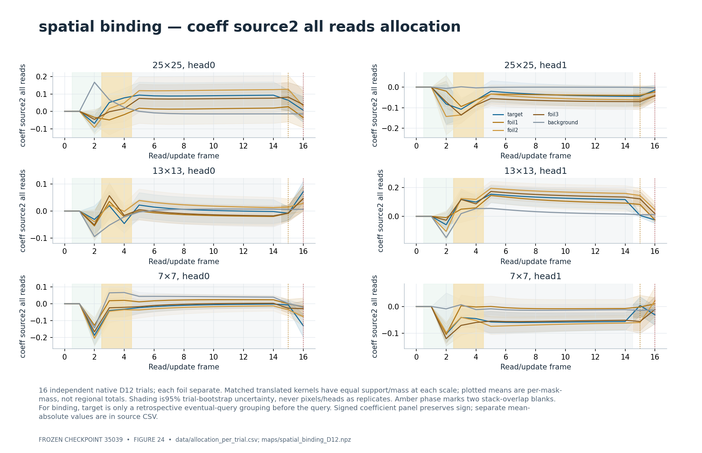
16 independent native D12 trials; each foil separate. Matched translated kernels have equal support/mass at each scale; plotted means are per-mask-mass, not regional totals. Shading is95% trial-bootstrap uncertainty, never pixels/heads as replicates. Amber phase marks two stack-overlap blanks. For binding, target is only a retrospective eventual-query grouping before the query. Signed coefficient panel preserves sign; separate mean-absolute values are in source CSV.
PNG · SVG · PDF · Source: data/allocation_per_trial.csv; maps/spatial_binding_D12.npz
Absolute coefficient magnitude is not signed allocation
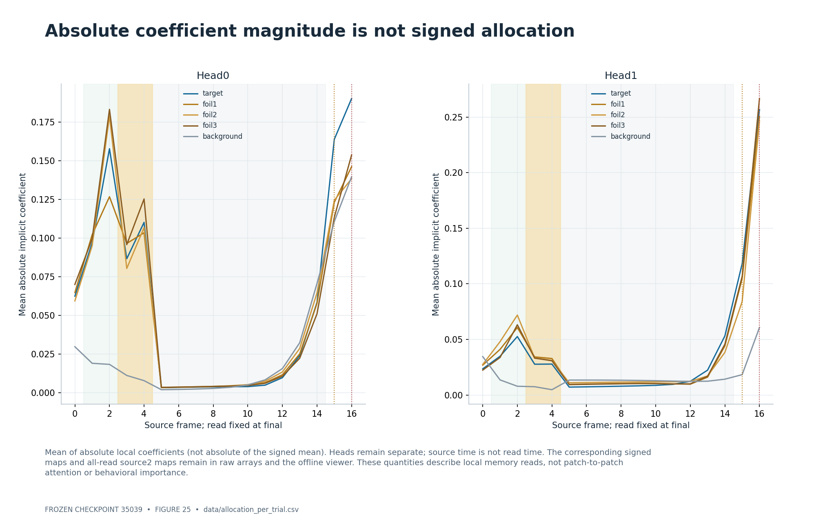
Mean of absolute local coefficients (not absolute of the signed mean). Heads remain separate; source time is not read time. The corresponding signed maps and all-read source2 maps remain in raw arrays and the offline viewer. These quantities describe local memory reads, not patch-to-patch attention or behavioral importance.
PNG · SVG · PDF · Source: data/allocation_per_trial.csv
Local suppression — site, timing and dose
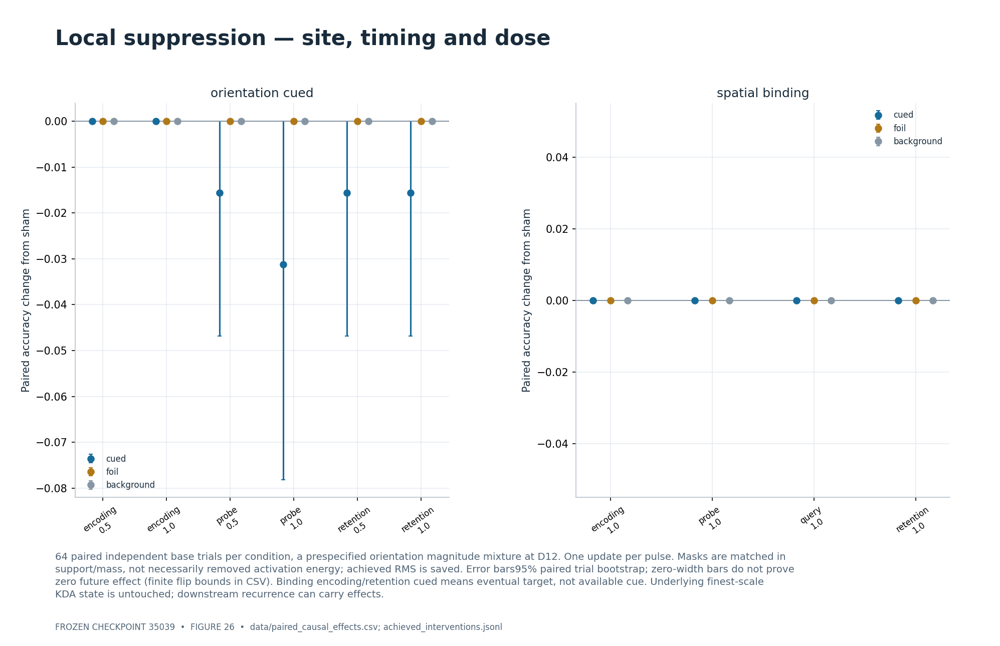
64 paired independent base trials per condition, a prespecified orientation magnitude mixture at D12. One update per pulse. Masks are matched in support/mass, not necessarily removed activation energy; achieved RMS is saved. Error bars95% paired trial bootstrap; zero-width bars do not prove zero future effect (finite flip bounds in CSV). Binding encoding/retention cued means eventual target, not available cue. Underlying finest-scale KDA state is untouched; downstream recurrence can carry effects.
PNG · SVG · PDF · Source: data/paired_causal_effects.csv; achieved_interventions.jsonl
Suppression psychometrics
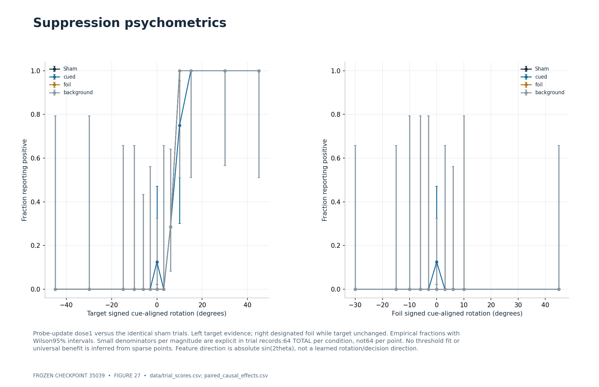
Probe-update dose1 versus the identical sham trials. Left target evidence; right designated foil while target unchanged. Empirical fractions with Wilson95% intervals. Small denominators per magnitude are explicit in trial records:64 TOTAL per condition, not64 per point. No threshold fit or universal benefit is inferred from sparse points. Feature direction is absolute sin(2theta), not a learned rotation/decision direction.
PNG · SVG · PDF · Source: data/trial_scores.csv; paired_causal_effects.csv
Calibrated feature pulses — site, timing and dose
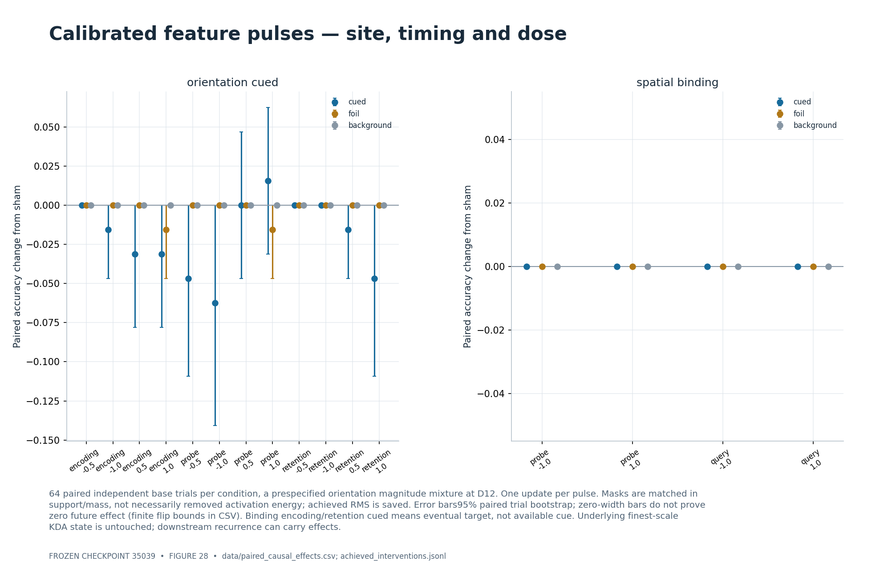
64 paired independent base trials per condition, a prespecified orientation magnitude mixture at D12. One update per pulse. Masks are matched in support/mass, not necessarily removed activation energy; achieved RMS is saved. Error bars95% paired trial bootstrap; zero-width bars do not prove zero future effect (finite flip bounds in CSV). Binding encoding/retention cued means eventual target, not available cue. Underlying finest-scale KDA state is untouched; downstream recurrence can carry effects.
PNG · SVG · PDF · Source: data/paired_causal_effects.csv; achieved_interventions.jsonl
Positive feature stimulation psychometrics
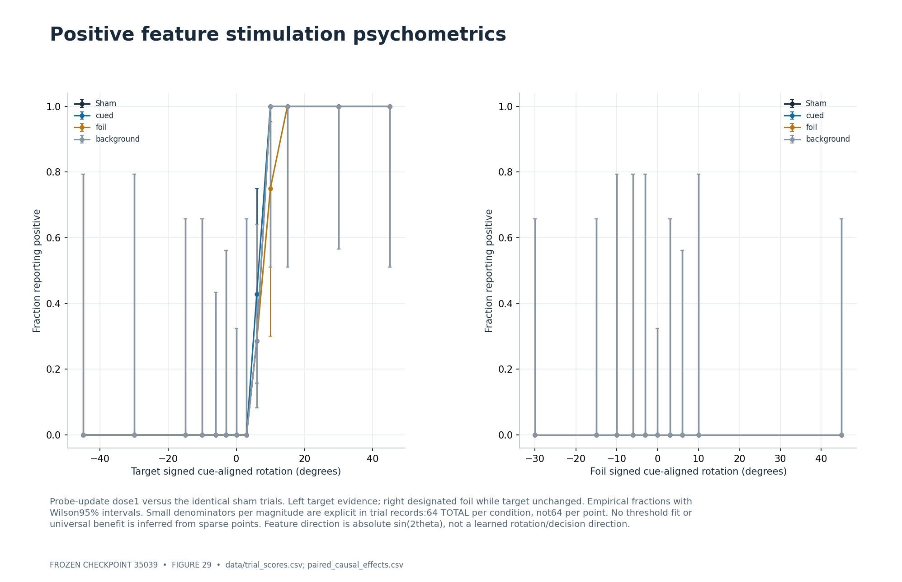
Probe-update dose1 versus the identical sham trials. Left target evidence; right designated foil while target unchanged. Empirical fractions with Wilson95% intervals. Small denominators per magnitude are explicit in trial records:64 TOTAL per condition, not64 per point. No threshold fit or universal benefit is inferred from sparse points. Feature direction is absolute sin(2theta), not a learned rotation/decision direction.
PNG · SVG · PDF · Source: data/trial_scores.csv; paired_causal_effects.csv
Opposite pulses and matched random-direction controls
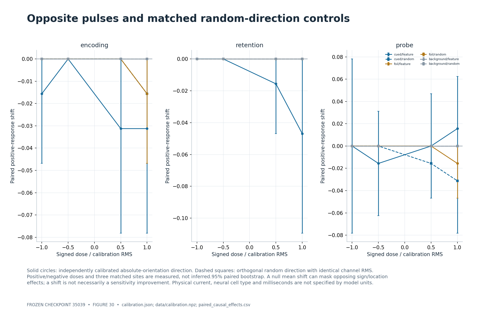
Solid circles: independently calibrated absolute-orientation direction. Dashed squares: orthogonal random direction with identical channel RMS. Positive/negative doses and three matched sites are measured, not inferred.95% paired bootstrap. A null mean shift can mask opposing sign/location effects; a shift is not necessarily a sensitivity improvement. Physical current, neural cell type and milliseconds are not specified by model units.
PNG · SVG · PDF · Source: calibration.json; data/calibration.npz; paired_causal_effects.csv
Sensitivity and report criterion must be distinguished
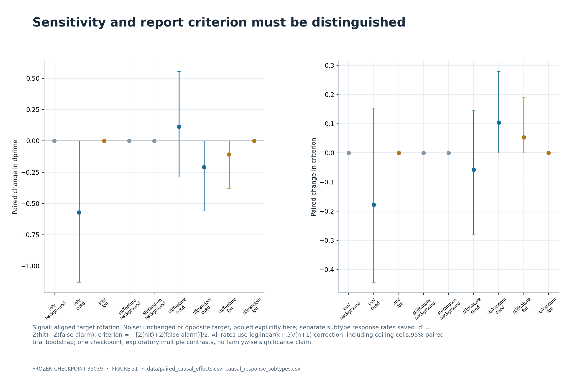
Signal: aligned target rotation. Noise: unchanged or opposite target, pooled explicitly here; separate subtype response rates saved. d′ = Z(hit)−Z(false alarm); criterion = −[Z(hit)+Z(false alarm)]/2. All rates use loglinear(k+.5)/(n+1) correction, including ceiling cells.95% paired trial bootstrap; one checkpoint, exploratory multiple contrasts, no familywise significance claim.
PNG · SVG · PDF · Source: data/paired_causal_effects.csv; causal_response_subtypes.csv
Spatial effects: only locations actually perturbed
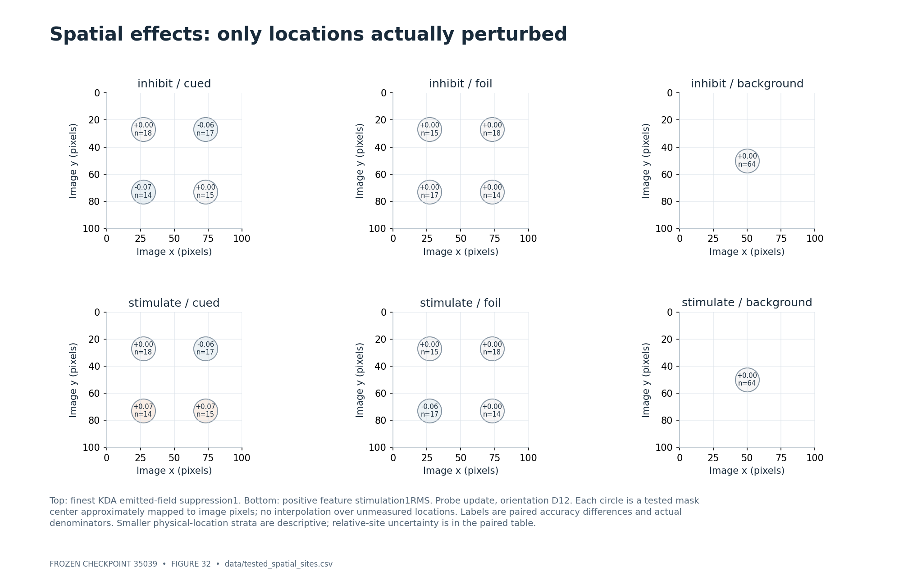
Top: finest KDA emitted-field suppression1. Bottom: positive feature stimulation1RMS. Probe update, orientation D12. Each circle is a tested mask center approximately mapped to image pixels; no interpolation over unmeasured locations. Labels are paired accuracy differences and actual denominators. Smaller physical-location strata are descriptive; relative-site uncertainty is in the paired table.
PNG · SVG · PDF · Source: data/tested_spatial_sites.csv
What the feature pulse does—and does not—identify
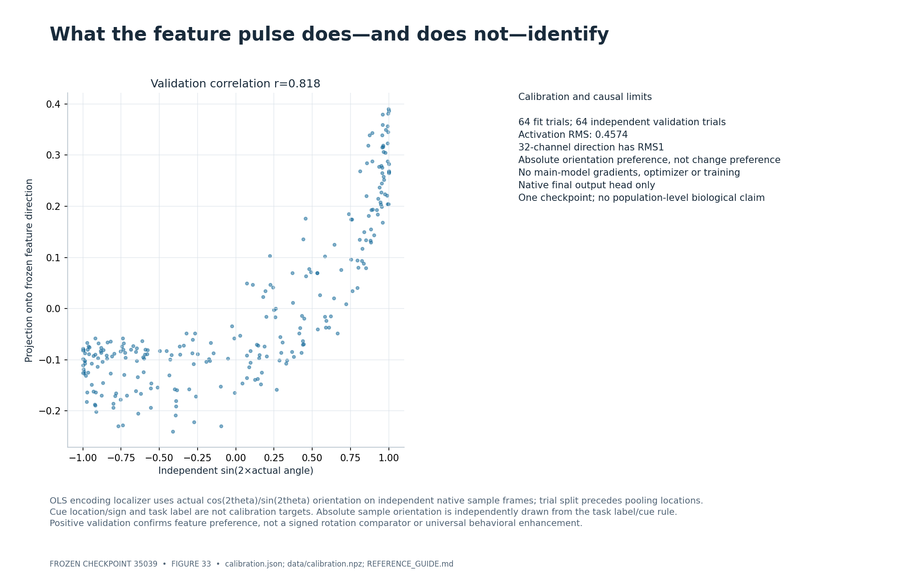
OLS encoding localizer uses actual cos(2theta)/sin(2theta) orientation on independent native sample frames; trial split precedes pooling locations. Cue location/sign and task label are not calibration targets. Absolute sample orientation is independently drawn from the task label/cue rule. Positive validation confirms feature preference, not a signed rotation comparator or universal behavioral enhancement.
PNG · SVG · PDF · Source: calibration.json; data/calibration.npz; REFERENCE_GUIDE.md
Direction and interval-order controls at native difficulty
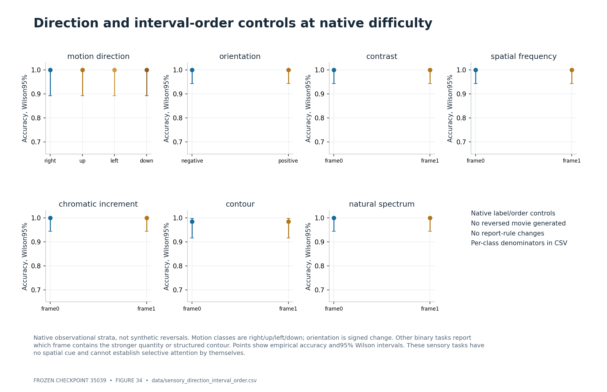
Native observational strata, not synthetic reversals. Motion classes are right/up/left/down; orientation is signed change. Other binary tasks report which frame contains the stronger quantity or structured contour. Points show empirical accuracy and95% Wilson intervals. These sensory tasks have no spatial cue and cannot establish selective attention by themselves.
PNG · SVG · PDF · Source: data/sensory_direction_interval_order.csv